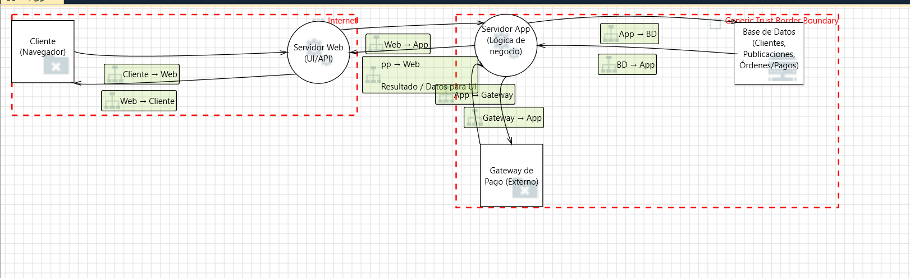
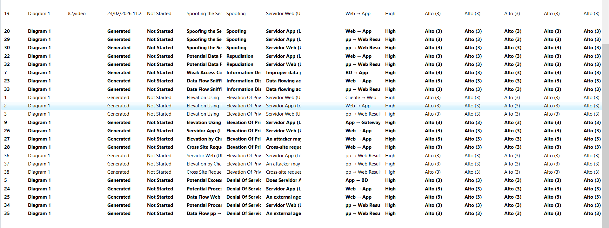
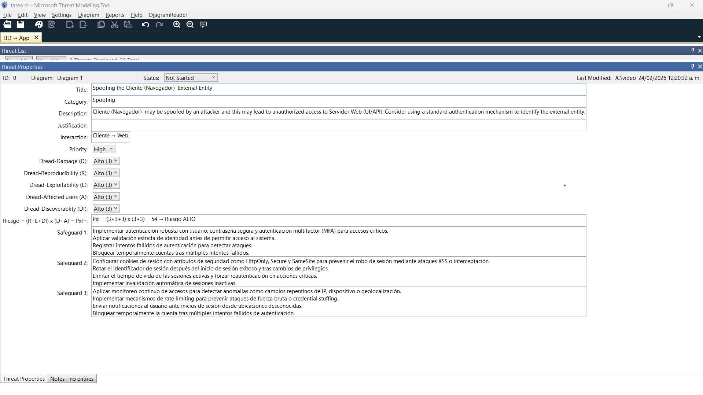

Este reporte está estructurado para evidenciar cada criterio. En cada sección se muestra un sello de cumplimiento indicando el criterio que se está atendiendo.
Este reporte modela una aplicación web típica con interfaz (UI), una API, un servidor de lógica de negocio, una base de datos con información sensible (clientes, publicaciones, órdenes/pagos) y un gateway externo de pago. El objetivo es reducir riesgos mediante controles preventivos, detectivos y correctivos que sean verificables.
El DFD identifica entidades externas, procesos, almacenes de datos y flujos. Las fronteras de confianza (trust boundaries) ayudan a ubicar dónde cambia el nivel de confianza y, por tanto, dónde son obligatorios controles como autenticación, cifrado y validación.



STRIDE clasifica amenazas por tipo: Spoofing, Tampering, Repudiation, Information Disclosure, Denial of Service y Elevation of Privilege. Para priorizar, se evalúa cada amenaza con DREAD en escala 1–3: Daño (D), Reproducibilidad (R), Explotabilidad (E), Usuarios afectados (A) y Descubribilidad (Di).
PxI = (R + E + Di) × (D + A)
Interpretación: mientras más fácil de reproducir/explotar/descubrir y mayor daño/impacto,
más alto el riesgo.
*Los valores son consistentes con la escala observada (Alto=3) en el ejemplo del modelado.
La siguiente tabla concentra la evaluación DREAD de 30 amenazas priorizadas. Cada fila incluye el elemento/flujo donde ocurre y el PxI calculado.
| # | STRIDE | Amenaza | Elemento/Flujo | D | R | E | A | Di | PxI | Nivel |
|---|---|---|---|---|---|---|---|---|---|---|
| 1 | S | Suplantación de sesión (robo de cookie/JWT) | Cliente ↔ Web |
3 | 3 | 2 | 3 | 3 | 48 | ALTO |
| 2 | S | Credential stuffing / fuerza bruta en login | Cliente → Web |
3 | 3 | 2 | 3 | 2 | 42 | ALTO |
| 3 | S | Phishing/Clon del sitio para capturar credenciales | Internet/Cliente |
3 | 2 | 2 | 3 | 3 | 42 | ALTO |
| 4 | S | Suplantación del Gateway (DNS/Cert falsos) | App ↔ Gateway |
3 | 2 | 2 | 3 | 2 | 36 | ALTO |
| 5 | S | Suplantación de servicio interno (App/BD) | App ↔ BD |
3 | 2 | 2 | 3 | 2 | 36 | ALTO |
| 6 | T | Manipulación de parámetros (precio/cantidad) | Cliente → Web |
3 | 3 | 3 | 3 | 2 | 48 | ALTO |
| 7 | T | Inyección SQL/NoSQL para alterar datos | Web/App → BD |
3 | 3 | 3 | 3 | 2 | 48 | ALTO |
| 8 | T | Modificación de payload en tránsito (sin TLS) | Web ↔ App |
3 | 2 | 2 | 3 | 2 | 36 | ALTO |
| 9 | T | Callback/resultado de pago falsificado | Gateway → App |
3 | 2 | 2 | 3 | 2 | 36 | ALTO |
| 10 | T | Carga de archivo malicioso (PDF/imagen) | Cliente → Web |
3 | 2 | 2 | 2 | 2 | 30 | MEDIO |
| 11 | R | Usuario niega una compra/pago | Web/App |
3 | 2 | 1 | 3 | 2 | 30 | MEDIO |
| 12 | R | Borrado o alteración de logs | Servidor Web/App |
3 | 2 | 2 | 3 | 2 | 36 | ALTO |
| 13 | R | Falta de correlación de eventos (sin request-id) | Web ↔ App ↔ BD |
2 | 2 | 1 | 2 | 2 | 20 | BAJO |
| 14 | R | No registrar cambios críticos de cuenta | App |
3 | 2 | 1 | 3 | 2 | 30 | MEDIO |
| 15 | R | No conservar evidencia de consentimientos/TOS | Web/App |
2 | 2 | 1 | 2 | 2 | 20 | BAJO |
| 16 | I | Exposición de datos sensibles en tránsito | Cliente ↔ Web |
3 | 2 | 2 | 3 | 2 | 36 | ALTO |
| 17 | I | Errores excesivos que filtran información (stack traces) | Web/App |
2 | 2 | 2 | 2 | 3 | 28 | MEDIO |
| 18 | I | IDOR: acceso a recursos por ID predecible | Web/App |
3 | 2 | 2 | 3 | 2 | 36 | ALTO |
| 19 | I | Mala configuración de CORS / fuga a dominios externos | Web |
2 | 2 | 2 | 2 | 2 | 24 | MEDIO |
| 20 | I | Backups o dumps expuestos (publicaciones/usuarios/pagos) | BD/Storage |
3 | 2 | 2 | 3 | 2 | 36 | ALTO |
| 21 | D | DoS por exceso de solicitudes (sin rate limit) | Cliente → Web |
3 | 3 | 2 | 3 | 2 | 42 | ALTO |
| 22 | D | Ataque a endpoints de búsqueda/consulta pesada | Cliente → Web/App |
2 | 3 | 2 | 2 | 2 | 28 | MEDIO |
| 23 | D | Exceso de payload (subidas grandes) agota recursos | Cliente → Web |
2 | 3 | 2 | 2 | 2 | 28 | MEDIO |
| 24 | D | Bloqueo de BD por consultas/locks | App ↔ BD |
3 | 2 | 2 | 3 | 2 | 36 | ALTO |
| 25 | D | Abuso de integración externa (Gateway) por reintentos | App ↔ Gateway |
2 | 2 | 2 | 2 | 2 | 24 | MEDIO |
| 26 | E | Escalada por roles mal validados (admin/user) | Web/App |
3 | 2 | 2 | 3 | 2 | 36 | ALTO |
| 27 | E | CSRF en acciones sensibles | Web |
3 | 2 | 2 | 3 | 2 | 36 | ALTO |
| 28 | E | SSRF desde servidor hacia recursos internos | App |
3 | 2 | 2 | 3 | 2 | 36 | ALTO |
| 29 | E | XSS que roba tokens y eleva privilegios | Web (UI) |
3 | 2 | 2 | 3 | 3 | 42 | ALTO |
| 30 | E | Deserialización insegura / RCE | App |
3 | 2 | 2 | 3 | 2 | 36 | ALTO |
Recomendación académica: si el profesor exige “por cada STRIDE”, esta tabla ya está segmentada por las 6 categorías (5 amenazas cada una). En la herramienta puedes filtrar por Category y comprobar consistencia.
Para cada amenaza se propone una salvaguarda con controles concretos (preventivos/detectivos/correctivos). El formato está listo para copiar/pegar en el campo “Safeguard” del Threat Modeling Tool.
1. Aplicar autenticación robusta con MFA para cuentas con privilegios o transacciones de pago. 2. Usar sesiones firmadas o JWT con firma fuerte y rotación periódica de llaves (kid/rotation). 3. Configurar cookies de sesión con HttpOnly, Secure y SameSite=Strict/Lax según el flujo. 4. Regenerar identificador de sesión al iniciar sesión y al elevar privilegios (mitiga fixation). 5. Expirar sesión por inactividad y forzar reautenticación en operaciones críticas (pago/cambio). 6. Implementar detección de anomalías: cambio de IP, dispositivo, ubicación y patrones de acceso. 7. Bloquear temporalmente la cuenta ante patrones de robo de sesión (múltiples tokens activos). 8. Registrar eventos de autenticación con correlación (userId, sessionId, ip, user-agent). 9. Probar con seguridad (pentest/DAST) específicamente: hijacking, fixation y replay.
1. Implementar rate limiting por IP/usuario y protección contra brute force (p. ej. 5 intentos). 2. Habilitar mecanismos anti-automatización: CAPTCHA adaptativo tras intentos fallidos. 3. Aplicar política de contraseña: longitud, complejidad mínima y verificación contra listas filtradas. 4. Usar hash seguro con sal y factor de trabajo (bcrypt/argon2) y no revelar si el usuario existe. 5. Establecer bloqueos progresivos (backoff exponencial) y alertas ante intentos masivos. 6. Monitorear credenciales comprometidas (HIBP/API corporativa) y forzar reseteo si aplica. 7. Activar MFA opcional/obligatorio para roles sensibles o cuando se detecte riesgo elevado. 8. Registrar y correlacionar intentos (timestamp, ip, user-agent) para auditoría y forense. 9. Realizar pruebas de resistencia (carga) para asegurar que la mitigación no cause DoS.
1. Proteger contra phishing con HTTPS estricto y HSTS para evitar downgrades. 2. Implementar dominios y subdominios bien definidos; evitar mezclas (www/app/api). 3. Usar branding consistente, mensajes anti-phishing y verificación de URL en UI de login. 4. Activar MFA para reducir impacto de robo de credenciales por ingeniería social. 5. Implementar detección de login sospechoso y notificaciones al usuario (nuevo dispositivo). 6. Aplicar DMARC/DKIM/SPF en correos para reducir suplantación de comunicaciones oficiales. 7. Educar al usuario (banner en login) y proporcionar canal de reporte de sitios falsos. 8. Registrar y bloquear patrones: múltiples intentos desde ASN sospechosos o proxies. 9. Realizar revisión periódica de certificados y monitoreo de typosquatting del dominio.
1. Forzar TLS 1.2+ con validación estricta de certificados (pinning si es app móvil). 2. Verificar el origen del Gateway mediante mTLS o firmas HMAC de mensajes/callbacks. 3. Validar DNS con buenas prácticas (DNSSEC si aplica) y monitorear cambios de registros. 4. Restringir endpoints de callback: allowlist de IPs del proveedor (si el Gateway lo permite). 5. No confiar en parámetros del cliente; confirmar estado de pago consultando API del Gateway. 6. Manejar tokens de pago de forma efímera y con expiración corta; evitar reuso/replay. 7. Registrar eventos de pago con correlación (orderId, transactionId, signature status). 8. Simular ataques en pruebas: fake callbacks, replay, downgrade TLS, MITM controlado. 9. Revisar cumplimiento del proveedor y aplicar hardening según su documentación oficial.
1. Aplicar autenticación entre servicios (mTLS o tokens service-to-service) en App↔BD. 2. Separar credenciales por entorno (dev/test/prod) y rotar secretos con un vault. 3. Usar cuentas de BD con mínimo privilegio (no usar root); aplicar roles por operación. 4. Restringir acceso a BD por red (subred privada, firewall, security groups, allowlist). 5. Auditar conexiones y consultas sensibles en BD (query audit) con retención definida. 6. Validar integridad de mensajes y usar parámetros preparados para evitar alteración. 7. Implementar monitoreo y alertas por conexiones inusuales (horario, IP, volumen). 8. Aplicar hardening de BD: deshabilitar funciones no usadas y cifrar en reposo. 9. Ejecutar revisión periódica de permisos y pruebas de bypass de autenticación interna.
1. Validar y normalizar toda entrada del cliente (server-side) antes de procesarla. 2. Aplicar controles de integridad: firmas/HMAC o tokens anti-manipulación en campos críticos. 3. Usar consultas parametrizadas/ORM seguro y sanitización para evitar inyecciones. 4. Aplicar controles de autorización por objeto (ABAC/RBAC) antes de actualizar recursos. 5. Rechazar campos extra (schema validation) y habilitar 'allowlist' de propiedades. 6. Activar TLS extremo a extremo y evitar datos sensibles en URLs o logs. 7. Implementar validaciones de negocio (precio oficial, stock, totales) del lado servidor. 8. Registrar cambios (quién, cuándo, qué cambió) y habilitar trazabilidad de transacciones. 9. Probar con casos de abuso: tampering, replay, payload alterado y archivos maliciosos.
1. Validar y normalizar toda entrada del cliente (server-side) antes de procesarla. 2. Aplicar controles de integridad: firmas/HMAC o tokens anti-manipulación en campos críticos. 3. Usar consultas parametrizadas/ORM seguro y sanitización para evitar inyecciones. 4. Aplicar controles de autorización por objeto (ABAC/RBAC) antes de actualizar recursos. 5. Rechazar campos extra (schema validation) y habilitar 'allowlist' de propiedades. 6. Activar TLS extremo a extremo y evitar datos sensibles en URLs o logs. 7. Implementar validaciones de negocio (precio oficial, stock, totales) del lado servidor. 8. Registrar cambios (quién, cuándo, qué cambió) y habilitar trazabilidad de transacciones. 9. Probar con casos de abuso: tampering, replay, payload alterado y archivos maliciosos.
1. Validar y normalizar toda entrada del cliente (server-side) antes de procesarla. 2. Aplicar controles de integridad: firmas/HMAC o tokens anti-manipulación en campos críticos. 3. Usar consultas parametrizadas/ORM seguro y sanitización para evitar inyecciones. 4. Aplicar controles de autorización por objeto (ABAC/RBAC) antes de actualizar recursos. 5. Rechazar campos extra (schema validation) y habilitar 'allowlist' de propiedades. 6. Activar TLS extremo a extremo y evitar datos sensibles en URLs o logs. 7. Implementar validaciones de negocio (precio oficial, stock, totales) del lado servidor. 8. Registrar cambios (quién, cuándo, qué cambió) y habilitar trazabilidad de transacciones. 9. Probar con casos de abuso: tampering, replay, payload alterado y archivos maliciosos.
1. Validar y normalizar toda entrada del cliente (server-side) antes de procesarla. 2. Aplicar controles de integridad: firmas/HMAC o tokens anti-manipulación en campos críticos. 3. Usar consultas parametrizadas/ORM seguro y sanitización para evitar inyecciones. 4. Aplicar controles de autorización por objeto (ABAC/RBAC) antes de actualizar recursos. 5. Rechazar campos extra (schema validation) y habilitar 'allowlist' de propiedades. 6. Activar TLS extremo a extremo y evitar datos sensibles en URLs o logs. 7. Implementar validaciones de negocio (precio oficial, stock, totales) del lado servidor. 8. Registrar cambios (quién, cuándo, qué cambió) y habilitar trazabilidad de transacciones. 9. Probar con casos de abuso: tampering, replay, payload alterado y archivos maliciosos.
1. Validar y normalizar toda entrada del cliente (server-side) antes de procesarla. 2. Aplicar controles de integridad: firmas/HMAC o tokens anti-manipulación en campos críticos. 3. Usar consultas parametrizadas/ORM seguro y sanitización para evitar inyecciones. 4. Aplicar controles de autorización por objeto (ABAC/RBAC) antes de actualizar recursos. 5. Rechazar campos extra (schema validation) y habilitar 'allowlist' de propiedades. 6. Activar TLS extremo a extremo y evitar datos sensibles en URLs o logs. 7. Implementar validaciones de negocio (precio oficial, stock, totales) del lado servidor. 8. Registrar cambios (quién, cuándo, qué cambió) y habilitar trazabilidad de transacciones. 9. Probar con casos de abuso: tampering, replay, payload alterado y archivos maliciosos.
1. Definir una política de auditoría: qué eventos se registran y por cuánto tiempo se conservan. 2. Agregar correlación de eventos (request-id, user-id, session-id) en Web/App/BD/Gateway. 3. Guardar logs en almacenamiento inmutable o WORM (append-only) con controles de integridad. 4. Sincronizar tiempo con NTP y registrar timestamps confiables para soporte forense. 5. Firmar eventos críticos (órdenes/pagos) y conservar evidencia de confirmaciones y recibos. 6. Controlar acceso a logs: solo roles autorizados; separar logs de aplicación y seguridad. 7. Alertar por intentos de borrado/alteración de logs o caída del servicio de logging. 8. Incluir trazabilidad de acciones administrativas (cambios de rol, reembolsos, bajas). 9. Realizar revisiones periódicas de auditoría y simulacros de investigación (tabletop).
1. Definir una política de auditoría: qué eventos se registran y por cuánto tiempo se conservan. 2. Agregar correlación de eventos (request-id, user-id, session-id) en Web/App/BD/Gateway. 3. Guardar logs en almacenamiento inmutable o WORM (append-only) con controles de integridad. 4. Sincronizar tiempo con NTP y registrar timestamps confiables para soporte forense. 5. Firmar eventos críticos (órdenes/pagos) y conservar evidencia de confirmaciones y recibos. 6. Controlar acceso a logs: solo roles autorizados; separar logs de aplicación y seguridad. 7. Alertar por intentos de borrado/alteración de logs o caída del servicio de logging. 8. Incluir trazabilidad de acciones administrativas (cambios de rol, reembolsos, bajas). 9. Realizar revisiones periódicas de auditoría y simulacros de investigación (tabletop).
1. Definir una política de auditoría: qué eventos se registran y por cuánto tiempo se conservan. 2. Agregar correlación de eventos (request-id, user-id, session-id) en Web/App/BD/Gateway. 3. Guardar logs en almacenamiento inmutable o WORM (append-only) con controles de integridad. 4. Sincronizar tiempo con NTP y registrar timestamps confiables para soporte forense. 5. Firmar eventos críticos (órdenes/pagos) y conservar evidencia de confirmaciones y recibos. 6. Controlar acceso a logs: solo roles autorizados; separar logs de aplicación y seguridad. 7. Alertar por intentos de borrado/alteración de logs o caída del servicio de logging. 8. Incluir trazabilidad de acciones administrativas (cambios de rol, reembolsos, bajas). 9. Realizar revisiones periódicas de auditoría y simulacros de investigación (tabletop).
1. Definir una política de auditoría: qué eventos se registran y por cuánto tiempo se conservan. 2. Agregar correlación de eventos (request-id, user-id, session-id) en Web/App/BD/Gateway. 3. Guardar logs en almacenamiento inmutable o WORM (append-only) con controles de integridad. 4. Sincronizar tiempo con NTP y registrar timestamps confiables para soporte forense. 5. Firmar eventos críticos (órdenes/pagos) y conservar evidencia de confirmaciones y recibos. 6. Controlar acceso a logs: solo roles autorizados; separar logs de aplicación y seguridad. 7. Alertar por intentos de borrado/alteración de logs o caída del servicio de logging. 8. Incluir trazabilidad de acciones administrativas (cambios de rol, reembolsos, bajas). 9. Realizar revisiones periódicas de auditoría y simulacros de investigación (tabletop).
1. Definir una política de auditoría: qué eventos se registran y por cuánto tiempo se conservan. 2. Agregar correlación de eventos (request-id, user-id, session-id) en Web/App/BD/Gateway. 3. Guardar logs en almacenamiento inmutable o WORM (append-only) con controles de integridad. 4. Sincronizar tiempo con NTP y registrar timestamps confiables para soporte forense. 5. Firmar eventos críticos (órdenes/pagos) y conservar evidencia de confirmaciones y recibos. 6. Controlar acceso a logs: solo roles autorizados; separar logs de aplicación y seguridad. 7. Alertar por intentos de borrado/alteración de logs o caída del servicio de logging. 8. Incluir trazabilidad de acciones administrativas (cambios de rol, reembolsos, bajas). 9. Realizar revisiones periódicas de auditoría y simulacros de investigación (tabletop).
1. Clasificar datos (PII, pagos) y aplicar principio de mínima exposición en respuestas API. 2. Cifrar en tránsito con TLS y en reposo con llaves administradas (KMS/Vault). 3. Aplicar control de acceso por recurso (IDOR): validar ownership/tenant en cada request. 4. Evitar mensajes de error detallados al cliente; usar manejo centralizado de excepciones. 5. Configurar CORS estrictamente (allowlist de orígenes) y bloquear credenciales cruzadas no necesarias. 6. Sanitizar logs: no registrar tokens, contraseñas, números completos de tarjeta o PII sensible. 7. Proteger respaldos: cifrado, acceso restringido, rotación y pruebas de restauración seguras. 8. Aplicar cabeceras de seguridad (CSP, X-Content-Type-Options, Referrer-Policy) en Web UI. 9. Ejecutar pruebas de fuga: enumeración, errores, misconfiguración y exposición de storage.
1. Clasificar datos (PII, pagos) y aplicar principio de mínima exposición en respuestas API. 2. Cifrar en tránsito con TLS y en reposo con llaves administradas (KMS/Vault). 3. Aplicar control de acceso por recurso (IDOR): validar ownership/tenant en cada request. 4. Evitar mensajes de error detallados al cliente; usar manejo centralizado de excepciones. 5. Configurar CORS estrictamente (allowlist de orígenes) y bloquear credenciales cruzadas no necesarias. 6. Sanitizar logs: no registrar tokens, contraseñas, números completos de tarjeta o PII sensible. 7. Proteger respaldos: cifrado, acceso restringido, rotación y pruebas de restauración seguras. 8. Aplicar cabeceras de seguridad (CSP, X-Content-Type-Options, Referrer-Policy) en Web UI. 9. Ejecutar pruebas de fuga: enumeración, errores, misconfiguración y exposición de storage.
1. Clasificar datos (PII, pagos) y aplicar principio de mínima exposición en respuestas API. 2. Cifrar en tránsito con TLS y en reposo con llaves administradas (KMS/Vault). 3. Aplicar control de acceso por recurso (IDOR): validar ownership/tenant en cada request. 4. Evitar mensajes de error detallados al cliente; usar manejo centralizado de excepciones. 5. Configurar CORS estrictamente (allowlist de orígenes) y bloquear credenciales cruzadas no necesarias. 6. Sanitizar logs: no registrar tokens, contraseñas, números completos de tarjeta o PII sensible. 7. Proteger respaldos: cifrado, acceso restringido, rotación y pruebas de restauración seguras. 8. Aplicar cabeceras de seguridad (CSP, X-Content-Type-Options, Referrer-Policy) en Web UI. 9. Ejecutar pruebas de fuga: enumeración, errores, misconfiguración y exposición de storage.
1. Clasificar datos (PII, pagos) y aplicar principio de mínima exposición en respuestas API. 2. Cifrar en tránsito con TLS y en reposo con llaves administradas (KMS/Vault). 3. Aplicar control de acceso por recurso (IDOR): validar ownership/tenant en cada request. 4. Evitar mensajes de error detallados al cliente; usar manejo centralizado de excepciones. 5. Configurar CORS estrictamente (allowlist de orígenes) y bloquear credenciales cruzadas no necesarias. 6. Sanitizar logs: no registrar tokens, contraseñas, números completos de tarjeta o PII sensible. 7. Proteger respaldos: cifrado, acceso restringido, rotación y pruebas de restauración seguras. 8. Aplicar cabeceras de seguridad (CSP, X-Content-Type-Options, Referrer-Policy) en Web UI. 9. Ejecutar pruebas de fuga: enumeración, errores, misconfiguración y exposición de storage.
1. Clasificar datos (PII, pagos) y aplicar principio de mínima exposición en respuestas API. 2. Cifrar en tránsito con TLS y en reposo con llaves administradas (KMS/Vault). 3. Aplicar control de acceso por recurso (IDOR): validar ownership/tenant en cada request. 4. Evitar mensajes de error detallados al cliente; usar manejo centralizado de excepciones. 5. Configurar CORS estrictamente (allowlist de orígenes) y bloquear credenciales cruzadas no necesarias. 6. Sanitizar logs: no registrar tokens, contraseñas, números completos de tarjeta o PII sensible. 7. Proteger respaldos: cifrado, acceso restringido, rotación y pruebas de restauración seguras. 8. Aplicar cabeceras de seguridad (CSP, X-Content-Type-Options, Referrer-Policy) en Web UI. 9. Ejecutar pruebas de fuga: enumeración, errores, misconfiguración y exposición de storage.
1. Implementar rate limiting y cuotas por IP/usuario/endpoint (especialmente login y búsqueda). 2. Aplicar throttling y circuit breakers para dependencias (BD/Gateway) ante degradación. 3. Definir límites de tamaño de payload y tiempo de ejecución (timeouts) por solicitud. 4. Usar caché para lecturas frecuentes y paginación obligatoria en listas y búsquedas. 5. Optimizar consultas con índices y evitar operaciones N+1 o filtros sin índice. 6. Habilitar WAF/Protección DDoS si el despliegue es público (cloud edge). 7. Monitorear métricas (latencia, errores, CPU, conexiones BD) y alertar por umbrales. 8. Aislar recursos: pools de conexiones, colas asíncronas para tareas pesadas, backpressure. 9. Probar con carga: stress test y escenarios de abuso para validar recuperación y resiliencia.
1. Implementar rate limiting y cuotas por IP/usuario/endpoint (especialmente login y búsqueda). 2. Aplicar throttling y circuit breakers para dependencias (BD/Gateway) ante degradación. 3. Definir límites de tamaño de payload y tiempo de ejecución (timeouts) por solicitud. 4. Usar caché para lecturas frecuentes y paginación obligatoria en listas y búsquedas. 5. Optimizar consultas con índices y evitar operaciones N+1 o filtros sin índice. 6. Habilitar WAF/Protección DDoS si el despliegue es público (cloud edge). 7. Monitorear métricas (latencia, errores, CPU, conexiones BD) y alertar por umbrales. 8. Aislar recursos: pools de conexiones, colas asíncronas para tareas pesadas, backpressure. 9. Probar con carga: stress test y escenarios de abuso para validar recuperación y resiliencia.
1. Implementar rate limiting y cuotas por IP/usuario/endpoint (especialmente login y búsqueda). 2. Aplicar throttling y circuit breakers para dependencias (BD/Gateway) ante degradación. 3. Definir límites de tamaño de payload y tiempo de ejecución (timeouts) por solicitud. 4. Usar caché para lecturas frecuentes y paginación obligatoria en listas y búsquedas. 5. Optimizar consultas con índices y evitar operaciones N+1 o filtros sin índice. 6. Habilitar WAF/Protección DDoS si el despliegue es público (cloud edge). 7. Monitorear métricas (latencia, errores, CPU, conexiones BD) y alertar por umbrales. 8. Aislar recursos: pools de conexiones, colas asíncronas para tareas pesadas, backpressure. 9. Probar con carga: stress test y escenarios de abuso para validar recuperación y resiliencia.
1. Implementar rate limiting y cuotas por IP/usuario/endpoint (especialmente login y búsqueda). 2. Aplicar throttling y circuit breakers para dependencias (BD/Gateway) ante degradación. 3. Definir límites de tamaño de payload y tiempo de ejecución (timeouts) por solicitud. 4. Usar caché para lecturas frecuentes y paginación obligatoria en listas y búsquedas. 5. Optimizar consultas con índices y evitar operaciones N+1 o filtros sin índice. 6. Habilitar WAF/Protección DDoS si el despliegue es público (cloud edge). 7. Monitorear métricas (latencia, errores, CPU, conexiones BD) y alertar por umbrales. 8. Aislar recursos: pools de conexiones, colas asíncronas para tareas pesadas, backpressure. 9. Probar con carga: stress test y escenarios de abuso para validar recuperación y resiliencia.
1. Implementar rate limiting y cuotas por IP/usuario/endpoint (especialmente login y búsqueda). 2. Aplicar throttling y circuit breakers para dependencias (BD/Gateway) ante degradación. 3. Definir límites de tamaño de payload y tiempo de ejecución (timeouts) por solicitud. 4. Usar caché para lecturas frecuentes y paginación obligatoria en listas y búsquedas. 5. Optimizar consultas con índices y evitar operaciones N+1 o filtros sin índice. 6. Habilitar WAF/Protección DDoS si el despliegue es público (cloud edge). 7. Monitorear métricas (latencia, errores, CPU, conexiones BD) y alertar por umbrales. 8. Aislar recursos: pools de conexiones, colas asíncronas para tareas pesadas, backpressure. 9. Probar con carga: stress test y escenarios de abuso para validar recuperación y resiliencia.
1. Aplicar control de acceso estricto (RBAC/ABAC) y validar rol en servidor, no en cliente. 2. Implementar protección CSRF con tokens y SameSite; exigir métodos seguros y headers. 3. Evitar XSS con sanitización y Content Security Policy (CSP); codificar salida (output encoding). 4. Validar URLs y bloquear SSRF con allowlists, bloqueo a metadata endpoints y DNS rebinding. 5. Separar privilegios: cuentas admin distintas, operaciones sensibles con reautenticación/MFA. 6. Usar principios de mínimo privilegio en BD y servicios; no ejecutar con permisos elevados. 7. Revisar dependencias y deserialización: usar formatos seguros y deshabilitar tipos peligrosos. 8. Registrar acciones de elevación y alertar por cambios de rol o accesos administrativos. 9. Realizar pruebas de seguridad: CSRF, XSS, SSRF, RCE y bypass de autorización por objeto.
1. Aplicar control de acceso estricto (RBAC/ABAC) y validar rol en servidor, no en cliente. 2. Implementar protección CSRF con tokens y SameSite; exigir métodos seguros y headers. 3. Evitar XSS con sanitización y Content Security Policy (CSP); codificar salida (output encoding). 4. Validar URLs y bloquear SSRF con allowlists, bloqueo a metadata endpoints y DNS rebinding. 5. Separar privilegios: cuentas admin distintas, operaciones sensibles con reautenticación/MFA. 6. Usar principios de mínimo privilegio en BD y servicios; no ejecutar con permisos elevados. 7. Revisar dependencias y deserialización: usar formatos seguros y deshabilitar tipos peligrosos. 8. Registrar acciones de elevación y alertar por cambios de rol o accesos administrativos. 9. Realizar pruebas de seguridad: CSRF, XSS, SSRF, RCE y bypass de autorización por objeto.
1. Aplicar control de acceso estricto (RBAC/ABAC) y validar rol en servidor, no en cliente. 2. Implementar protección CSRF con tokens y SameSite; exigir métodos seguros y headers. 3. Evitar XSS con sanitización y Content Security Policy (CSP); codificar salida (output encoding). 4. Validar URLs y bloquear SSRF con allowlists, bloqueo a metadata endpoints y DNS rebinding. 5. Separar privilegios: cuentas admin distintas, operaciones sensibles con reautenticación/MFA. 6. Usar principios de mínimo privilegio en BD y servicios; no ejecutar con permisos elevados. 7. Revisar dependencias y deserialización: usar formatos seguros y deshabilitar tipos peligrosos. 8. Registrar acciones de elevación y alertar por cambios de rol o accesos administrativos. 9. Realizar pruebas de seguridad: CSRF, XSS, SSRF, RCE y bypass de autorización por objeto.
1. Aplicar control de acceso estricto (RBAC/ABAC) y validar rol en servidor, no en cliente. 2. Implementar protección CSRF con tokens y SameSite; exigir métodos seguros y headers. 3. Evitar XSS con sanitización y Content Security Policy (CSP); codificar salida (output encoding). 4. Validar URLs y bloquear SSRF con allowlists, bloqueo a metadata endpoints y DNS rebinding. 5. Separar privilegios: cuentas admin distintas, operaciones sensibles con reautenticación/MFA. 6. Usar principios de mínimo privilegio en BD y servicios; no ejecutar con permisos elevados. 7. Revisar dependencias y deserialización: usar formatos seguros y deshabilitar tipos peligrosos. 8. Registrar acciones de elevación y alertar por cambios de rol o accesos administrativos. 9. Realizar pruebas de seguridad: CSRF, XSS, SSRF, RCE y bypass de autorización por objeto.
1. Aplicar control de acceso estricto (RBAC/ABAC) y validar rol en servidor, no en cliente. 2. Implementar protección CSRF con tokens y SameSite; exigir métodos seguros y headers. 3. Evitar XSS con sanitización y Content Security Policy (CSP); codificar salida (output encoding). 4. Validar URLs y bloquear SSRF con allowlists, bloqueo a metadata endpoints y DNS rebinding. 5. Separar privilegios: cuentas admin distintas, operaciones sensibles con reautenticación/MFA. 6. Usar principios de mínimo privilegio en BD y servicios; no ejecutar con permisos elevados. 7. Revisar dependencias y deserialización: usar formatos seguros y deshabilitar tipos peligrosos. 8. Registrar acciones de elevación y alertar por cambios de rol o accesos administrativos. 9. Realizar pruebas de seguridad: CSRF, XSS, SSRF, RCE y bypass de autorización por objeto.
El análisis muestra concentración de riesgo alto en: autenticación/sesión, validación de entradas, integridad del flujo de pagos, y control de acceso (autorización) a nivel de objeto y rol. Las mitigaciones propuestas priorizan controles en capas (defense in depth) para reducir probabilidad y/o impacto de explotación.